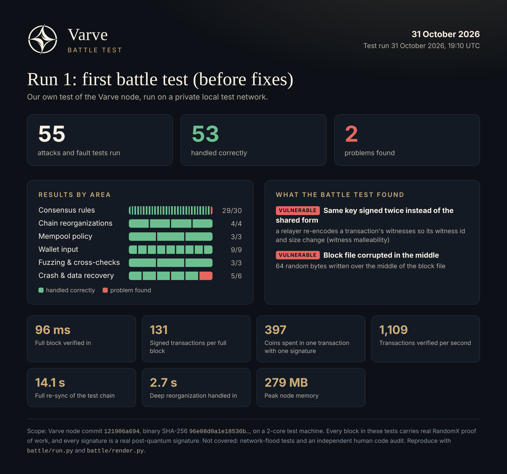
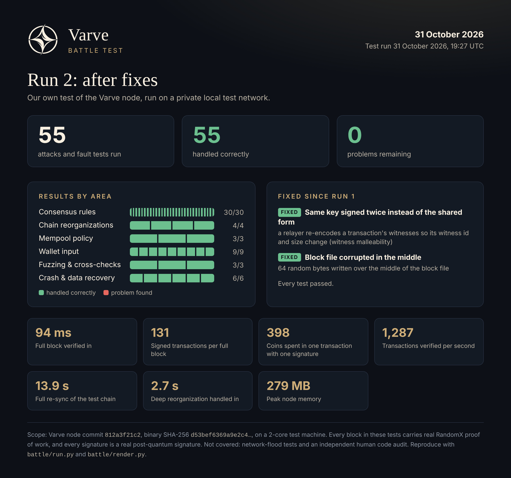

Security
Security
Report problems privately, and verify everything yourself.
Battle tests
We attack our own node on a private test network and publish the results, failures included. Each run starts real nodes and throws invalid blocks at them (made-up coins, double spends, stolen-coin signatures, bad timestamps), along with longer chains that try to undo payments and thousands of corrupted messages. Every attack block carries real RandomX proof of work and every signature is a real post-quantum signature. Two independent implementations must reach the same verdict on every input. We also pull the plug mid-sync and mid-mining and corrupt the node's data files to see whether it recovers.
The first run on 31 October 2026 passed 53 of 55 tests and found two real problems. The node now fixes both, and the second run passed all 55.




What these tests do not cover yet: network flooding and an independent human code audit. Passing them shows the node enforces its rules under attack. It does not prove the absence of bugs. Anyone can rerun them: the harness and raw results are in battle/.
Reporting a vulnerability
Please report vulnerabilities privately using GitHub's private vulnerability reporting: https://github.com/IsamuNagai/varve/security/advisories/new. Do not open a public issue for an undisclosed vulnerability.
Verifying future releases
Testnet builds are produced by GitHub Actions from tagged source, with published SHA-256 checksums. For mainnet the bar is higher, and you will be able to verify everything yourself:
- Reproducible builds, so anyone can rebuild and compare the result.
- Multiple independent signers, so no single key vouches for a release.
- Published checksums to compare against what you downloaded.
Seed phrases and keys
No official channel will ever ask for your seed phrase. Never share seeds or private keys.